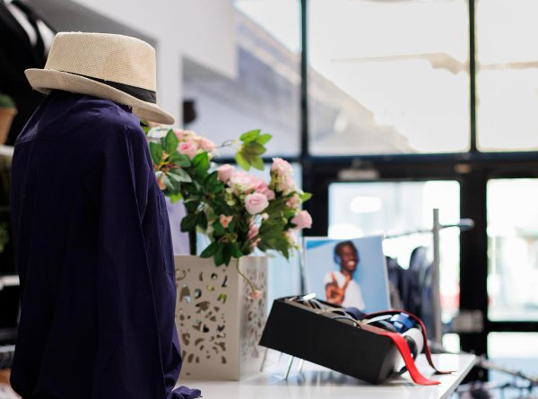

Saga Mabolurstutter: Meira en bara föt
Hvernig allt byrjaði Allt byrjaði þetta með einfaldri hugmynd: föt eiga að vera framlenging á persónuleikanum. Í heimi „hraðtískunnar“, þar sem flíkur missa gildi sitt (og útlit) á einu tímabili, ákváðum við að fara aðra leið. Stuttermabolur Mabolurstutter var stofnað af hópi áhugafólks sem var orðið þreytt á einsleitum prentum og gerviefnum. Við byrjuðum sem lítil hönnunarstofa þar sem hver skissa var teiknuð í höndunum. Í dag erum við samfélag fólks sem metur frelsi, þægindi og gæði. Við seljum ekki bara stuttermaboli; við sköpum stemningu sem þú klæðist á hverjum morgni. Efni: Við notum úrvals bómull með smá teygju (elastane) fyrir fullkomið snið. Efnið fer í gegnum forvinnslu svo bolurinn breytir ekki um stærð eftir þvott. Tækni: Notkun nútíma stafrænnar prenttækni gerir okkur kleift að búa til nákvæmar myndir sem hvorki upplitast né springa. Ertu með spurningar? Við erum alltaf til taks. Netfang: support@stuttermabolur.is Sími: +23112025